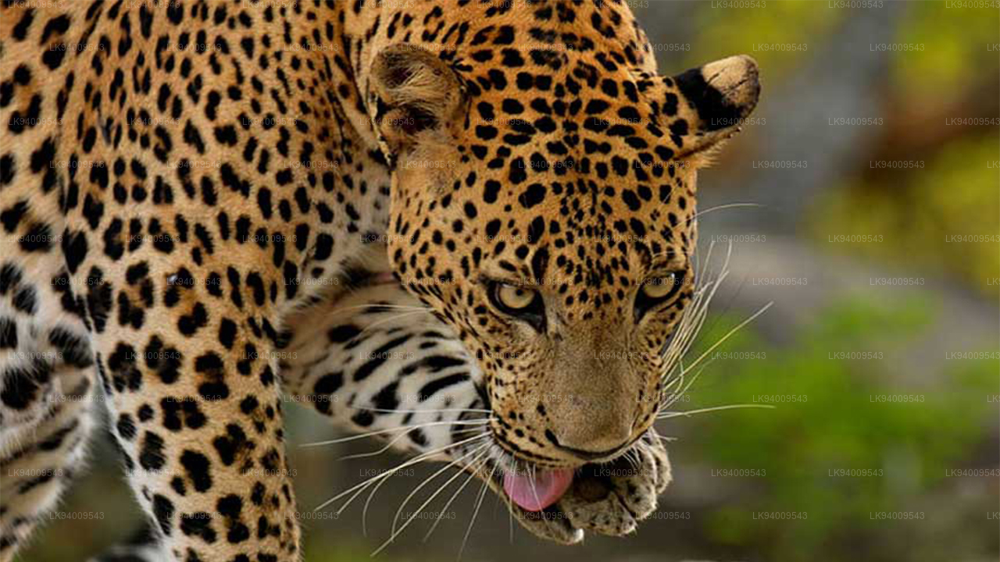
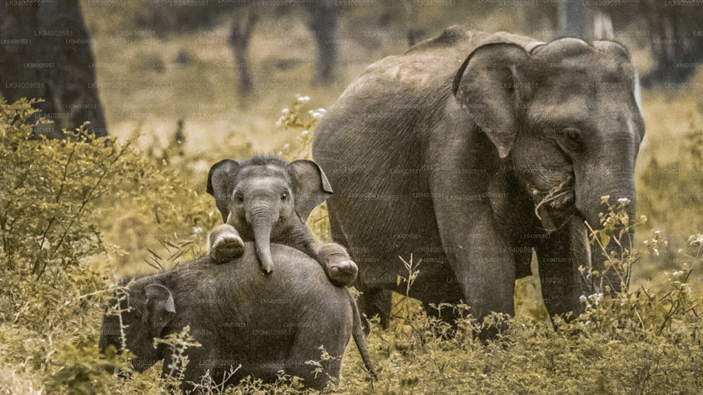

| Leopard |
wet zone,dry zone and arid zone. |
 |
Hare, Sambar deer, langurs and even rats. Eating patterns may also include frogs, birds, reptiles, other types of rodents and even insects. |
rusty yellow coat with dark spots |
| Elephant |
tropical forests of the island, mainly lowland dry deciduous woodlands, scrubs and frequenting nearby grasslands and cropped lands. |
 |
wide variety of vegetation including grasses, leaves, climbers, shoots, barks, roots, fruits, nuts and seeds and a large number of plant species. |
smaller in size but more attractive in appearance. It possesses smaller ears with dorsal borders folded laterally. |
| Wild Buffalo |
Can be witnessed in plenty at the waterholes in the National Parks around the country. |
 |
Flourishing grass and other water plants. |
They are massive in stature sometimes six feet tall at the shoulders, an adult male weighing between 700 – 1200 kg with the female weighing a little less. Both the male and female possess horns, the female has longer horns and the male broader and stronger horns that grow throughout their lives. |
| Sloth Bear |
Found mainly living in the lowland dry forests and the rain forest in the western slopes of the central hills |
 |
Sloth Bears are omnivores who feed on almost anything like plants, animals and insects; nevertheless being agile tree climbers their favourite diet includes fruit, bees honey and termites, most often found high-up on trees. |
The Sri Lankan Sloth Bear is stocky in build covered with long black shaggy fur and long hair around its neck; the adult male weighs about 140kg and is typically about 3 ft high at the shoulders and about six ft long, while the female weighing about 95kg is slightly smaller in size and stature. |